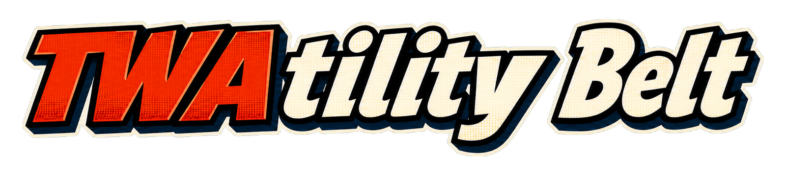

Create Specification Project
Choose how to stage the complete project. Every path shows a review before canonical data changes.

Specification StudioChoose how to stage the complete project. Every path shows a review before canonical data changes.
The contextual primary action edits the selected entity. Validate checks the Draft; Release publishes one immutable plan.